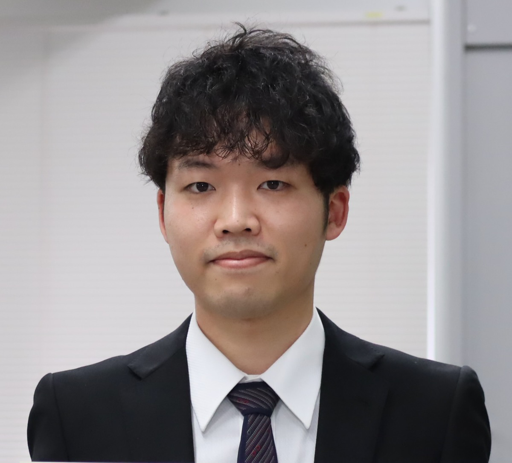

写真はつまらないのでそのうち変えます
半導体集積回路の設計について研究しています．
現在は特に超低電圧で動作する回路技術の開拓研究に取り組んでいます．
大阪大学 大学院工学研究科 電気電子情報通信工学専攻
集積エレクトロニクス講座 集積情報デザイン領域
廣瀬研究室
博士後期課程 2年
日本学術振興会 特別研究員(DC1) (4/1/2025~)
〒565-0871 大阪府吹田市山田丘2-1
大阪大学 吹田キャンパス内 (訪問の際はご連絡ください)
Maill: s.sumi [at] ssc.eei.eng.osaka-u.ac.jp